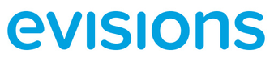

About Me

Background
I'm from Birmingham, Alabama, about two hours south of where I ended up going to school.
Education
I stayed close to home for college, earning a B.S. in Computer Science from the University of Alabama in Huntsville with a concentration in AI and Data Science. I graduated Cum Laude with a 3.6 GPA, was a member of the Honors College, and served as a Student Government Association Senator along the way.
Experience
Outside the classroom, I've worked on a range of coding and writing projects, which you can see on my LinkedIn or GitHub. Before this internship, I picked up writing and people-facing experience too, as a technical writer intern at Book Systems and a student specialist for the UAH College of Business — more on those, plus everything else, on my resume.
Career Goals
All of that pointed toward computer science, but two experiences in particular still stand out: my senior capstone and my AI and Data Science coursework, alongside classes outside the major like calculus and technical writing. That's where the work felt most meaningful and where I connected best with the material and my peers.
My interests span software engineering, QA, web design, and AI, but I'm most drawn to math, writing, and solving hard problems. I'm still figuring out where those fit together, and I'm okay with that. Learning didn't stop when I graduated, and part of why I took this internship was to get real exposure to different departments and see where I actually belong in the field.
Evisions
That search for the right fit is part of what brought me to Evisions. The company has spent over 25 years exclusively serving higher education, building software that eases the administrative load on colleges and universities so staff can focus on learning and discovery. Evisions currently supports over 900 institutions worldwide and is especially known for its highly rated customer support. Their core solutions include Argos, a flagship enterprise reporting tool, along with IntelliCheck for payment processing and FormFusion for document management, both of which integrate with the systems a school already uses.
Read more about EvisionsI earned the Argos Training Certificate from Evisions in June 2026, part of getting hands-on with their flagship reporting tool during the internship.
Internship
Here's how the internship itself came together, and what the summer actually looked like.
Why this internship and how I got started
I first learned about this opportunity through a mutual friend who works on the Customer Success team at Evisions. Working with them while preparing for this internship gave me real insight into the company and the role, and their advice throughout the process helped a lot.
Weekly structure
The internship followed a weekly rotation across different departments, ranging from Product and UX to Customer Success Team and Sales. View the department weeks. On Fridays, we sat in on special courses covering Philanthropy, Communications, Connections, and Business. See the bonus courses. The main highlights of the program were the SEA mock product and the capstone project.
Shadow days
I also extended the internship by three days to shadow the Marketing team, working one-on-one with their Senior Developer and Analytics group for a closer look at how that department operates day to day.